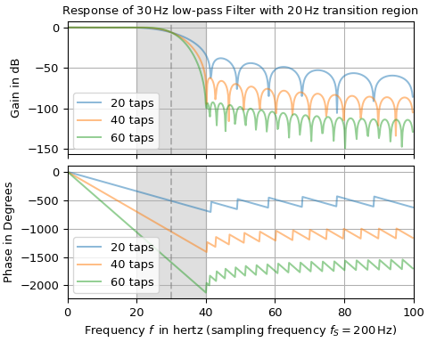
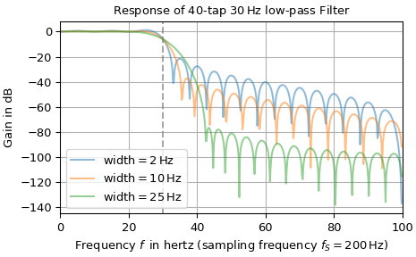
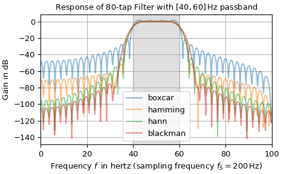
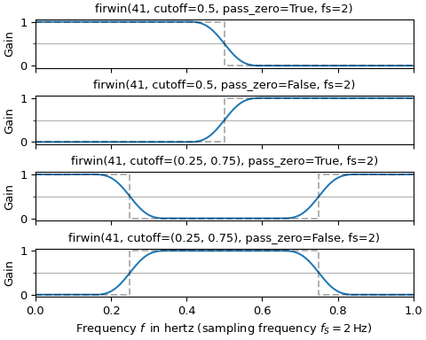

firwin#
- scipy.signal.firwin(numtaps, cutoff, *, width=None, window='hamming', pass_zero=True, scale=True, fs=None)[source]#
FIR filter design using the window method.
This function computes the coefficients of a finite impulse response filter. The filter will have linear phase; it will be Type I if numtaps is odd and Type II if numtaps is even.
Type II filters always have zero response at the Nyquist frequency, so a ValueError exception is raised if firwin is called with numtaps even and having a passband whose right end is at the Nyquist frequency.
- Parameters:
- numtapsint
Length of the filter (number of coefficients, i.e., the filter order + 1). numtaps must be odd if a passband includes the Nyquist frequency.
- cutofffloat or 1-D array_like
Cutoff frequency of filter (expressed in the same units as fs) or an array of cutoff frequencies (that is, band edges). In the former case, as a float, the cutoff frequency should correspond with the half-amplitude point, where the attenuation will be -6 dB. In the latter case, the frequencies in cutoff should be positive and monotonically increasing between 0 and fs/2. The values 0 and fs/2 must not be included in cutoff. It should be noted that this is different from the behavior of
iirdesign, where the cutoff is the half-power point (-3 dB).- widthfloat or None, optional
If not
None, then akaiserwindow is calculated where width specifies the approximate width of the transition region (expressed in the same unit as fs). This is achieved by utilizingkaiser_attento calculate an attenuation which is passed tokaiser_betafor determining the β parameter for the kaiser window. In this case, the window argument is ignored.- windowstr or tuple of str and parameter values, optional
Desired window to use. Default is
'hamming'. The window will be symmetric, unless a suffix'_periodic'is appended to the window name (e.g.,'hamming_periodic') Consultget_windowfor a list of windows and required parameters.- pass_zero{True, False, ‘bandpass’, ‘lowpass’, ‘highpass’, ‘bandstop’}, optional
Toggles the zero frequency bin (or DC gain) to be in the passband (
True) or in the stopband (False).'bandstop','lowpass'are synonyms forTrueand'bandpass','highpass'are synonyms forFalse.'lowpass','highpass'additionally require cutoff to be a scalar value or a length-one array. Default:True.Added in version 1.3.0: Support for string arguments.
- scalebool, optional
Set to
Trueto scale the coefficients so that the frequency response is exactly unity at a certain frequency. That frequency is either:0 (DC) if the first passband starts at 0 (i.e., pass_zero is
True)fs/2 (the Nyquist frequency) if the first passband ends at fs/2 (i.e., the filter is a single band highpass filter); center of first passband otherwise
- fsfloat, optional
The sampling frequency of the signal. Each frequency in cutoff must be between 0 and
fs/2. Default is 2.
- Returns:
- hndarray
FIR filter coefficients as 1d array with numtaps entries.
- Raises:
- ValueError
If any value in cutoff is less than or equal to 0 or greater than or equal to
fs/2, if the values in cutoff are not strictly monotonically increasing, or if numtaps is even but a passband includes the Nyquist frequency.
See also
firwin2Window method FIR filter design specifying gain-frequency pairs.
firwin_2d2D FIR filter design using the window method.
firlsFIR filter design using least-squares error minimization.
minimum_phaseConvert a FIR filter to minimum phase
remezCalculate the minimax optimal filter using the Remez exchange algorithm.
Notes
Array API Standard Support
firwinhas support for Python Array API Standard compatible backends in addition to NumPy. The following combinations of backend and device (or other capability) are supported.Library
CPU
GPU
NumPy
✅
n/a
CuPy
n/a
✅
PyTorch
✅
✅
JAX
⚠️ no JIT
⛔
Dask
⚠️ computes graph
n/a
See Support for the array API standard for more information.
Examples
The following example calculates frequency responses of a 30 Hz low-pass filter with various numbers of taps. The transition region width is 20 Hz. The upper plot shows the gain and the lower plot the phase. The vertical dashed line marks the corner frequency and the gray background the transition region.
>>> import matplotlib.pyplot as plt >>> import numpy as np >>> import scipy.signal as signal ... >>> fs = 200 # sampling frequency and number of taps >>> f_c, width = 30, 20 # corner frequency (-6 dB gain) >>> taps = [20, 40, 60] # number of taps ... >>> fg, (ax0, ax1) = plt.subplots(2, 1, sharex='all', layout="constrained", ... figsize=(5, 4)) >>> ax0.set_title(rf"Response of ${f_c}\,$Hz low-pass Filter with " + ... rf"${width}\,$Hz transition region") >>> ax0.set(ylabel="Gain in dB", xlim=(0, fs/2)) >>> ax1.set(xlabel=rf"Frequency $f\,$ in hertz (sampling frequency $f_S={fs}\,$Hz)", ... ylabel="Phase in Degrees") ... >>> for n in taps: # calculate filter and plot response: ... bb = signal.firwin(n, f_c, width=width, fs=fs) ... f, H = signal.freqz(bb, fs=fs) # calculate frequency response ... H_dB, H_ph = 20 * np.log10(abs(H)), np.rad2deg(np.unwrap(np.angle(H))) ... H_ph[H_dB<-150] = np.nan ... ax0.plot(f, H_dB, alpha=.5, label=rf"{n} taps") ... ax1.plot(f, H_ph, alpha=.5, label=rf"{n} taps") >>> for ax_ in (ax0, ax1): ... ax_.axvspan(f_c-width/2, f_c+width/2,color='gray', alpha=.25) ... ax_.axvline(f_c, color='gray', linestyle='--', alpha=.5) ... ax_.grid() ... ax_.legend() >>> plt.show()

The plots show that with increasing number of taps, the suppression in the stopband increases and the (negative) slope of the phase steepens, which signifies a longer signal delay in the filter. Note that the plots contain numeric artifacts caused by the limited frequency resolution: The phase jumps are not real—in reality the phase is a straight line with a constant negative slope. Furthermore, the gains contain zero values (i.e., -∞ dB), which are also not depicted.
The second example determines the frequency responses of a 30 Hz low-pass filter with 40 taps. This time the width of the transition region varies:
>>> import matplotlib.pyplot as plt >>> import numpy as np >>> import scipy.signal as signal ... >>> fs = 200 # sampling frequency and number of taps >>> n, f_c = 40, 30 # number of taps and corner frequency (-6 dB gain) >>> widths = (2, 10, 25) # width of transition region ... >>> fg, ax = plt.subplots(1, 1, layout="constrained",) >>> ax.set(title=rf"Response of {n}-tap ${f_c}\,$Hz low-pass Filter", ... xlabel=rf"Frequency $f\,$ in hertz (sampling frequency $f_S={fs}\,$Hz)", ... ylabel="Gain in dB", xlim=(0, fs/2)) >>> ax.axvline(f_c, color='gray', linestyle='--', alpha=.7) # mark corner frequency ... >>> for width in widths: # calculate filter and plot response: ... bb = signal.firwin(n, f_c, width=width, fs=fs) ... f, H = signal.freqz(bb, fs=fs) # calculate frequency response ... H_dB= 20 * np.log10(abs(H)) # convert to dB ... ax.plot(f, H_dB, alpha=.5, label=rf"width$={width}\,$Hz") ... >>> ax.grid() >>> ax.legend() >>> plt.show()

It can be seen in the plot above that with increasing width of the transition region the suppression in the stopband increases. Since the phase does not vary, it is not depicted.
Instead of defining a transition region width, a window function can also be specified. The plot below depicts the response of an 80 tap band-pass filter having a passband ranging form 40 Hz to 60 Hz (denoted by a gray background) with different windows:
>>> import matplotlib.pyplot as plt >>> import numpy as np >>> import scipy.signal as signal ... >>> fs, n = 200, 80 # sampling frequency and number of taps >>> cutoff = [40, 60] # corner frequencies (-6 dB gain) >>> windows = ('boxcar', 'hamming', 'hann', 'blackman') ... >>> fg, ax = plt.subplots(1, 1, layout="constrained") # set up plotting >>> ax.set(title=rf"Response of {n}-tap Filter with ${cutoff}\,$Hz passband", ... xlabel=rf"Frequency $f\,$ in hertz (sampling frequency $f_S={fs}\,$Hz)", ... ylabel="Gain in dB", xlim=(0, fs/2)) >>> ax.axvspan(*cutoff, color='gray', alpha=.25) # mark passband ... >>> for win in windows: # calculate filter and plot response: ... bb = signal.firwin(n, cutoff, window=win, pass_zero=False, fs=fs) ... f, H = signal.freqz(bb, fs=fs) # calculate frequency response ... H_dB = 20 * np.log10(abs(H)) # convert to dB ... ax.plot(f, H_dB, alpha=.5, label=win) ... >>> ax.grid() >>> ax.legend() >>> plt.show()

The plot shows that the choice of window mainly influences the balance of the suppression in the stopband against the width of the transition region. Note that utilizing the
boxcarwindow corresponds to just truncating the ideal infinite impulse response to the length of numtaps samples.The last example illustrates how to use the cutoff and pass_zero parameters to create a low-pass, a high-pass, a band-stop and a band-pass filter. The desired ideal frequency gain is drawn as a gray dashed line whereas the response of the FIR filter is depicted as a blue continuous line:
>>> from itertools import product >>> import matplotlib.pyplot as plt >>> import numpy as np >>> import scipy.signal as signal ... >>> cutoffs = [0.5, (.25, .75)] # cutoff parameters >>> fg, axx = plt.subplots(4, 1, sharex='all', layout="constrained", ... figsize=(5, 4)) >>> for ax, (cutoff, pass_zero) in zip(axx, product(cutoffs, (True, False))): ... ax.set(title=f"firwin(41, {cutoff=}, {pass_zero=}, fs=2)", ylabel="Gain") ... ax.set_yticks([0.5], minor=True) # mark gain of 0.5 (= -6 dB) ... ax.grid(which='minor', axis='y') ... ... bb = signal.firwin(41, cutoff, pass_zero=pass_zero, fs=2) ... ff, HH = signal.freqz(bb, fs=2) ... ax.plot(ff, abs(HH), 'C0-', label="FIR Response") ... ... f_d = np.hstack(([0], np.atleast_1d(cutoff), [1])) ... H_d = np.tile([1, 0] if pass_zero else [0, 1], 2)[:len(f_d)] ... H_d[-1] = H_d[-2] # account for symmetry at Nyquist frequency ... ax.step(f_d, H_d, 'k--', where='post', alpha=.3, label="Desired Response") >>> axx[-1].set(xlabel=r"Frequency $f\,$ in hertz (sampling frequency $f_S=2\,$Hz)", ... xlim=(0, 1)) >>> plt.show()
